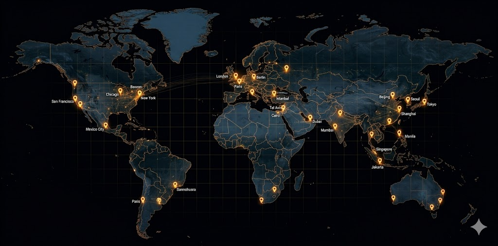

Automated Governance. Human Oversight.
99.8%
ACCURACY_RATE
<15ms
LATENCY_THRESHOLD
LIVE_PIPELINE_VISUALIZATION // STATUS: ACTIVE
Engineered for Scale
Designed for platforms handling 1M+ daily submissions.
Deployed in 14 Countries
Mission-critical moderation infrastructure operating across every major region.

AI detection precision across all content categories and regions.
Average queue processing time from ingest to reviewer assignment.
Reduction in manual appeals after toxicity threshold calibration.
Infrastructure Logs
Documented outcomes from mission-critical audits.
How We Work
A structured four-phase engagement model built for platform scale.
System Audit
Deep diagnostic of your existing moderation stack, queues, and policy gaps.
Infrastructure Design
Custom architecture blueprints tailored to your platform scale and policy needs.
Deployment
Structured rollout with live monitoring and threshold calibration at every stage.
Continuous Monitor
Ongoing performance tracking, auditing, and policy maintenance post-launch.
Initialize System Integration
Your moderation infrastructure is only as strong as its weakest queue. Let's find it together.
We work with platform architects, trust & safety leads, and policy teams at companies handling 1M+ daily content submissions.
SAFEQUEUE_INFRASTRUCTURE_GROUP // DISTRIBUTED_OPERATIONS // EST_2021